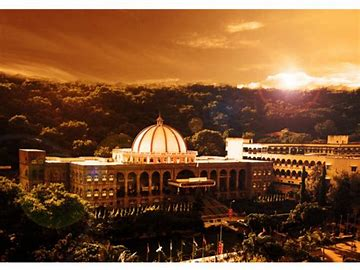

Colleges In Pune
Popular Colleges
COEP

College Of Engineering Pune (COEP) Technological University is a unitary public university of the Government of Maharashtra, situated in Pune, Maharashtra, India. Established in 1854, it is the 3rd oldest engineering institute in India, after College of Engineering, Guindy (1794) and IIT Roorkee (1847).The students and alumni are colloquially referred to as COEPians. On 23 June 2022, Government of Maharashtra issued a notification regarding conversion of the college into an independent technological university.[10] On 24 March 2022, both the houses of the state government passed the CoEP Technological University bill, which has conferred a unitary state university status on the institute.
COEP Pune Placement Statistics - UG (4 Years Programme)
| Academic Year | Students Placed | Median Salary |
|---|---|---|
| 2023 | 602 | Rs. 97500 |
| 2022 | 577 | Rs. 97000 |
Vishwakarma Institute of Technology

Vishwakarma Institute of Technology has emerged as a premier private institute with a reputation for its affordable fee structure. Affiliated to Savitribai Phule Pune University (SPPU), PICT has been a stalwart in computer science education. The institute, nestled in the vibrant city of Pune, Maharashtra, offers coveted B.E and M.E courses, adhering to the admission criteria outlined by the Maharashtra government. Notably, VIT has earned a coveted spot among the top 250 institutes according to the National Institutional Ranking Framework (NIRF).
COEP Pune Placement Statistics - UG (4 Years Programme)
| Academic Year | Students Placed | Median Salary |
|---|---|---|
| 2023 | 602 | Rs. 97500 |
| 2022 | 577 | Rs. 97000 |
Maharashtra Institute Of Technology
Maharashtra Institute of Technology (MIT) is the first private Engineering Institute to be established in the city of Pune, Maharashtra. It is one of the premier institutes for Indian and international students offering Undergraduate and Postgraduate courses in Engineering, Management, Medicine, Pharmacy, Design, and so on.Contributing towards the industrial, economic, and social growth of the society for over a quarter of a century, Maharashtra Academy of Engineering Education and Research (MAEER)’s MIT Group of Institutions has helped realize the dreams and aspirations of thousands of students. The group has spread its wings across Maharashtra with campuses in Kothrud, Alandi, and Loni. Being the brainchild of its visionary founder, Prof. Vishwanath D. Karad, MAEER established in 1983, managed to craft a niche position for being a one-of-its-kind undertaking that focuses on value-based education.